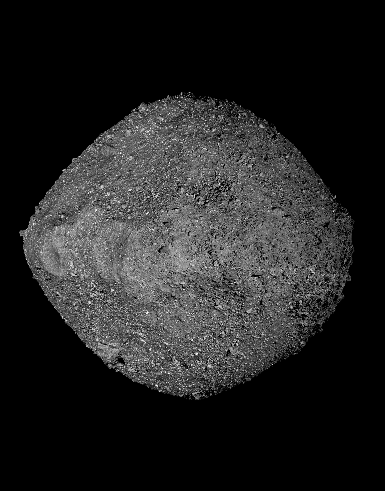

DEPARTMENT OF PHYSICS · UNIVERSITY OF CENTRAL FLORIDA
Small grains.
Cosmic stories.
I’m Rishant, a planetary science Ph.D. student exploring how
the Solar System came to be—
one isotope at a time.
From stardust to meteorites.
From the clean lab to the cosmos.

Big questions.
Very small clues.
How do the smallest grains of rock preserve the history of our Solar System?
I’m a Ph.D. student in Planetary and Space Sciences in the Department of Physics at the University of Central Florida. I earned my M.S. in Geological Sciences at Arizona State University’s School of Earth and Space Exploration, graduating in July 2026. My research there brought together high-precision measurements of meteoritic materials and models of the stars that made their ingredients.
I’m especially interested in the origin and volatile depletion of the Solar System, high- and low-temperature geochemistry, and the mass spectrometers that make these investigations possible.
Read my full CV My connection to SherghatiFollowing the
chemical clues.
Different scales. One connected story.
Explore the questions behind my work.
Read the landscape.
Rocks, terrestrial geochemistry, and field notes from India to Arizona.
IN THE LABORATORYFollow the elements.
Sample chemistry, glass standards, and laser-ablation mass spectrometry.
01Isotopic fingerprints
of the solar nebulaTi ISOTOPES · CAIs · ANALYTICAL METHODSASU · FROM 2023
At ASU, I worked on in-situ protocols for high-precision titanium isotope measurements in calcium–aluminum-rich inclusions (CAIs), including FUN CAIs. These tiny components can preserve clues to the materials that entered the solar nebula.
My laboratory work included laser-ablation multicollector ICP-MS, synthesizing Ti-doped CMAS glass standards, and clean-lab chemistry for magnesium purification.
02Stardust &
exploding starsPRESOLAR GRAINS · Ti & Cr · 3D MODELSASU · FROM 2024
At ASU, I used three-dimensional core-collapse supernova models to investigate the titanium and chromium isotope signatures observed in presolar oxide grains.
By examining explosive nucleosynthesis, mixing, and fallback, and comparing models with laboratory NanoSIMS measurements, I investigated where these grains’ isotopic signatures may have originated.
03What dissolving
a rock can revealSILICATE WEATHERING · EXPERIMENTAL GEOCHEMISTRY2021 — 2023
At the Indian Institute of Science, I investigated how cations move during silicate weathering through acid-leaching experiments on rocks ranging from ultramafic to felsic compositions.
This work included non-HF acid digestion, High-Pressure Asher experiments, and geochemical characterization of the Sadiya meteorite to investigate its classification.
Read my thesis ↗04Ancient aggregates,
different historiesAOAs · MUKUNDPURA · ALLENDESUMMER 2022
I investigated amoeboid olivine aggregates in the Mukundpura and Allende chondrites using electron-probe microanalysis.
Comparing mineral chemistry and textures offered a way to explore nebular processing and the different alteration histories recorded by these meteorites.
Read my project report ↗A tiny difference.
A lasting signature.
Isotopes of an element have different masses.
When material leaves a reservoir, its isotope
ratio can change. Try it for yourself.
What gets left behind?
Adjust how much remains and how strongly removal separates the isotopes.
Lighter isotopes leave preferentially. The material left behind becomes enriched in the heavier isotope.
The science behind the sliders
R / R₀ = f(α − 1) · Δ = 1000 × (R / R₀ − 1)
R is the heavy/light isotope ratio; α = Rremoved / Rremaining. Δ is the change relative to the starting ratio, in parts per thousand (‰). Strictly, f is the fraction of the light isotope remaining; it approximates the bulk reservoir fraction when the heavy isotope is rare.
This idealized Rayleigh model assumes a well-mixed reservoir, constant α, and continuous removal without re-equilibration, addition, or mixing. These are illustrative parameters, not measurements from a meteorite. Nucleosynthetic anomalies—the focus of much of my research—record different source histories and are distinct from the mass-dependent fractionation illustrated here.
Explore the Rayleigh model · MIT OpenCourseWare ↗From tiny offsets
to stellar extremes.
Calculate ε for a meteorite, then explore why a presolar grain’s enormous anomaly is easier to read as a percentage.
Grounded in geology.
Looking outward.
From mapping rocks in the field to measuring their isotopic signatures in the lab.
LA-MC-ICP-MS · EPMA · SEM
Clean-lab chemistry · Gas-mixing furnace
Python · C++ · GIS
- AUG 2026 — PRESENT
University of Central Florida
Ph.D. student in Planetary and Space Sciences
Department of Physics · Planetary science & cosmochemistry - 2023 — JUL 2026
Arizona State University
M.S. in Geological Sciences
School of Earth and Space Exploration - 2021 — 2023
Indian Institute of Science
M.Tech. in Earth Sciences
Bengaluru, India - 2019 — 2021
University of Delhi
M.Sc. in Geology
Hansraj College - 2016 — 2019
University of Delhi
B.Sc. in Geology
Hansraj College
Abstracts & contributions
Google ScholarThree-Dimensional Core-Collapse Supernova Clumps as Sources of 54Cr-Rich Presolar Oxide Nanograins
Prakash, R., Young, P. A. & Desch, S. J. · 88th Annual Meeting of the Meteoritical Society, Frankfurt · LPI Contribution 3162
Read conference abstract ↗Development of V- and Cr-Doped Ti-CMAS Glasses as Standards for In Situ Titanium Isotope Analysis of Calcium–Aluminum-Rich Inclusions
Prakash, R., Putak Juricek, M., Spring, I., Rai, V. & Wadhwa, M. · 88th Annual Meeting of the Meteoritical Society, Frankfurt · LPI Contribution 3162
Read conference abstract ↗Presolar oxide grains as probes of symmetric and asymmetric core-collapse supernova explosions
Prakash, R. & Young, P. · 247th American Astronomical Society Meeting
Read abstract on ADS ↗Santa María del Oro (IIIAB, Iron), Durango, Mexico
Campbell, A., Prakash, R., et al. · Meteoritical Bulletin, No. 114 · Classification entry
View meteorite classification ↗Origin and distribution of Ti nucleosynthetic anomalies in the solar nebula
Prakash, R., Rai, V. K., Aigner, M., Hines, R. & Wadhwa, M. · SESE Symposium · Poster
Amoeboid olivine aggregates in Mukundpura and Allende chondrites
Prakash, R. & Panda, D. · MetMESS · Conference presentation
Read abstract S1-09 ↗Science is better
when it’s shared.
Through the Buseck Center for Meteorite Studies outreach program at ASU and IISc Open Day, I’ve shared the stories of rocks and meteorites with people from many backgrounds.
I also bring a background in photography, student journalism, and volunteer teaching—other ways to observe carefully and make ideas accessible.
In my free time, I enjoy hiking, scenic views, and camping. My outdoor photo journal is taking shape; while the photographs are on their way, try a small meteor-dodging adventure.
Step outside the labTHE COSMIC NEIGHBORHOOD I CALL HOME
A little Mars,
close to home.
My ancestral village is next to Sherghati—the place behind the name of a whole family of Martian meteorites.
That connection makes planetary science personal. One day, I hope to walk the historic Shergotty fall area and search for another fragment: a shergottite close to home.
ON MY FIELDWORK WISH LIST
Return to Sherghati. Read the landscape.
Maybe meet a little piece of Mars.
A future search is a dream; whether any fragments remain is an open question.
THE FALL
The date it arrived on Earth—not the age of the rock.
01 A witnessed arrival
A roughly 5 kg stone fell at Sherghati, Bihar. Witnesses recovered it, and it reached a local British magistrate who sought to identify the unusual rock.
02 A name that traveled
Shergotty became the namesake of the shergottites, a family of meteorites from Mars. A place beside my ancestral home helped name rocks from another planet.
03 How do we know it is Martian?
Gas trapped in Shergotty matches the composition of the Martian atmosphere measured by the Viking spacecraft. An impact on Mars launched this rock into space; its journey eventually ended in India.
QUESTIONS, COLLABORATIONS, OR A GOOD ROCK STORY?
Let’s compare notes.
rishant.prakash@ucf.eduDepartment of Physics
University of Central Florida
Google Scholar Download CV